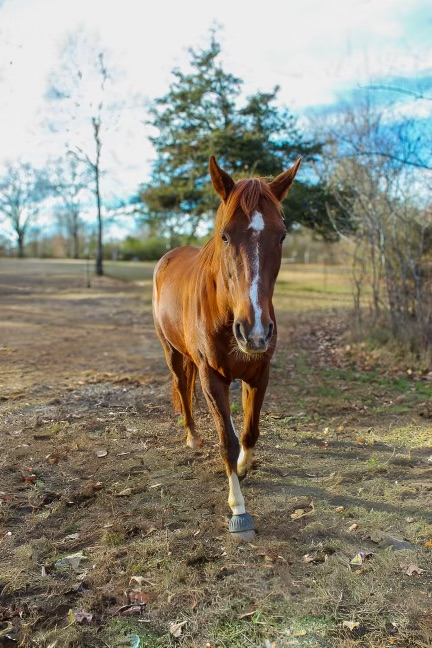
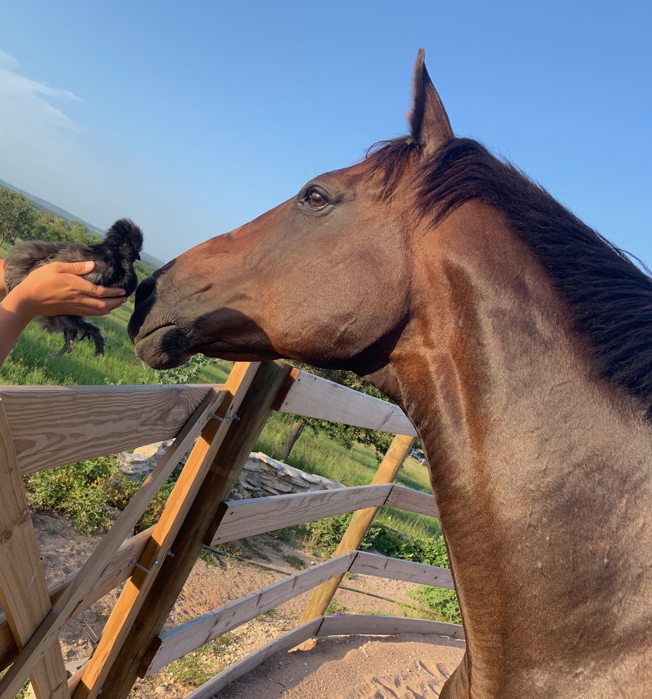

Teddy came to us as a rescue from the Santa Anita track extremely apprehensive about humans and injured. After 9 months of rehabilitation and patience we were able to teach him that working for us humans can be fun and rewarding, not scary. Teddy has been ours for over 3 years. He is a happy boy and will always need special attention which we are honored to give!

Callie is a retired race horse as well. She is working on stretching long and low into the contact while finding relaxation and balance. At first she was tense and co-dependent but confidence now prevails. It is fun to watch her move comfortably and trust herself again.